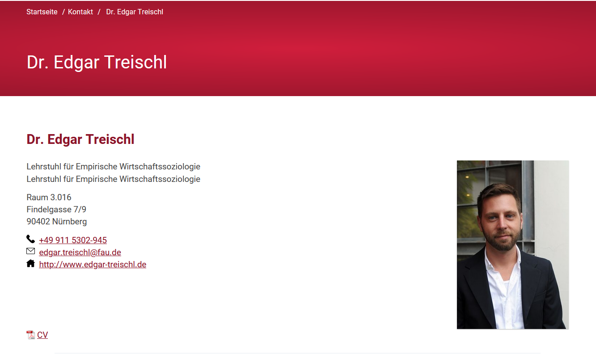
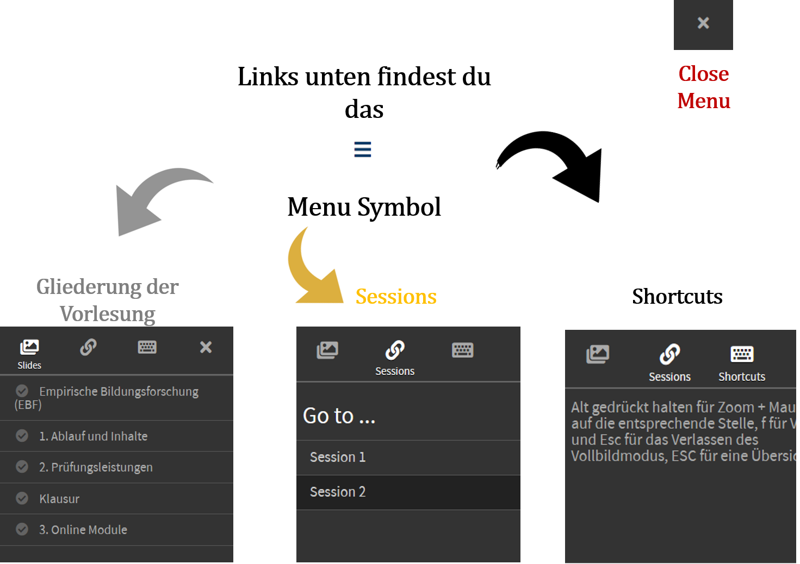

Vorlesung: Empirische Bildungsforschung (EBF)
Sitzung 1: Organisation und Ablauf
The Voice

Inhalte der ersten Sitzung
- Ablauf und Inhalte der Lehrveranstaltung
- Prüfungsleistung
- Digitale Lehre
1. Ablauf und Inhalte
Ablauf
- Für jede Sitzung wird ein Online Modul zur Verfügung gestellt (StudOn).
- Online Module beinhalten Screencasts, Audio und weitere digitale Elemente.
- Module sind auch als PDF verfügbar.
- Für allgemeine Fragen findest Du auf StudOn ein Forum.
Ziel ist es ...
sich im Laufe des Semesters mit Hilfe der Online Module in ausgewählte Themenblöcke der empirischen Bildungsforschung einzuarbeiten.
Themenblock I: Grundlagen
- Einführung und Formalia
- Methoden Bootcamp
- Zentrale Befunde der EBF
- Theorien der EBF
- Soziale Herkunft
Themenblock II: Anwendungsgebiete
- Evaluationsparadigma der EBF
- Effekte der Klassengröße
- Maßnahmen zur Reduktion sozialer Herkunftseffekte
- Effekte von Studiengebühren
Themenblock III: Klausur
- EBF The Quiz
- Und: FAQ Live Sitzung
- Klausur
FAQ Live Sitzungen
- Zeit: Jeweils Montags um 15:00 Uhr
- Termine: 02.05; 30.05; 11.07
- Möglichkeit: Fragen zu den Inhalten stellen
- Sitzungen sind nicht verpflichtend, sondern als offene Sitzung geplant
2. Prüfungsleistungen
Klausur
- Multiple-Choice Klausur (60 Minuten)
- Inhalt: Online Module und Vertiefungsliteratur
- Termin: 18.07.2022 um 15:00 Uhr
- Weitere Prüfungsmodalitäten werden auf StudOn veröffentlicht
Klausurtipp:
- Edgar ist kein Freund von auswendig lernen ...
- Stellt Euch lieber die Frage:
- Habe ich die zentralen Inhalte der LV verstanden?
- Kann ich Themen der LV anderen Studierenden erklären?
- Falls ja, seid ihr bestens für die Klausur gewappnet!
3. Online Module
Ein paar Worte dazu ...
Ein paar technische Aspekte:
Die Folien sind für Windows und Mac erstellt und getestet (Firefox, Chrome und Safari). Mobile Endgeräte funktionieren nur bedingt (Apple iPad).
Die Folien haben ein Menu

Shortcuts
- F: Full Mode
- ESC: Return Full Mode and Overview
Interaktive Elemente auf den Folien:
An manchen Stellen wird es vertikale Slides geben, um Inhalte zu vertiefen. Die Pfeile links unten zeigen Dir welche Richtungen es gibt.
Vertikale Slides
Vertiefen die einzelnen Inhalte, beispielsweise mit einem Video.
If you reach the lowest level...
Dann kannst Du wieder nach oben oder direkt nach rechts klicken.
...das heißt zum Glück nicht, dass das Online Studium keinen Spaß machen darf!
Und im Laufe des Semesters werden wir auf interaktive Elemente zurückgreifen, damit dies kein reiner Lesekurs wird. Beispielsweise:
- Interaktive Dashboards
- Online Quizzes
Welche Aussage(n) stimmen?
A.) Jede Woche wird es ein Online Modul geben, die ich mir auch während der Klausur anschauen kann, ansonsten gibt es nichts zu tun.
B.) Fast jede Woche wird es ein Online Modul geben, dass ich nach Möglichkeit direkt bearbeiten sollte.
C.) Jede Woche wird es eine Übungsaufgabe geben, Angaben dazu erhalte ich per Flaschenpost.
D.) Im Laufe des Semesters sind 2 frei wählbare Studien zu lesen, diese werden mündlich abgefragt.Richtige Antwort: B
Bei technischen Problemen und Fragen gib mir eine Rückmeldung! Und nutze auch das Forum :-)
Fassen wir zusammen:
- Am besten regelmäßig die Online Module bearbeiten
- Bei Fragen zur Live Sitzung kommen
- Bei sonstigen Fragen das Forum auf StudOn benutzen
- Stay healthy and keep in touch 😄